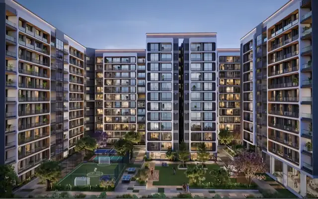

Key takeaways
- The project is reached by 24 m and 30 m wide roads.
- Public listings put Pune Airport roughly 4 to 5 km away.
- Ramwadi is the nearest operating metro station; a direct airport metro link is proposed, not operating.
- Pune Railway Station is approximately 9 km away.
Connectivity is one of the main reasons buyers look at East Pune. This guide covers the main roads, the metro and the airport around Dhanori, with Google Maps links so you can check live routes.
Roads
United Athila at Dhanori Central has access via 24 m and 30 m wide roads. Nearby landmarks include Dhanori Jakat Naka, Porwal Road, Dhanori Road, Dhanori–Lohegaon Road and the Pune Airport Road. Open the Directions links for live travel time from Dhanori Jakat Naka.
Metro
Ramwadi Metro Station is the nearest operating station. A direct metro link to the airport has been proposed, but it is a proposal, not an operating line. Confirm the current status with Pune Metro before you rely on it.
Airport and railway
| Place | Distance / note | Map |
|---|---|---|
| Pune International Airport | About 4–5 km (listings vary) | View on Google Maps · Directions from Dhanori Jakat Naka |
| Ramwadi Metro Station | Nearest operating metro | View on Google Maps · Directions from Dhanori Jakat Naka |
| Pune Railway Station | About 9 km | View on Google Maps · Directions from Dhanori Jakat Naka |
Plan your own route
Try the route from Dhanori Jakat Naka to Pune Airport at your usual travel time. For more about the area, read the Dhanori locality overview.
How we compiled this guide: place names come from public listings and are a starting point. Distances and travel times change with traffic and route, so use the Google Maps links to check live directions, and confirm details directly with each place before you decide.
How to test a commute
Pick the three places you will go most often and open each on the map from the project. Set the departure time you would really leave, and note the travel time on a weekday morning, a weekday evening and a weekend. Repeat the test on the day you visit. A route that looks short on a map can be slow at peak time, and the reverse is also true, so measure instead of assuming. Metro and airport timings change as works progress, so check current information before you rely on a plan.
Related guides

Living in Dhanori, Pune: a locality overview
Where Dhanori is in East Pune, what is close by and how to check it yourself on Google Maps.
Schools near Dhanori, Pune
CBSE and ICSE schools listed in Dhanori and Lohegaon, with map links and a checklist.